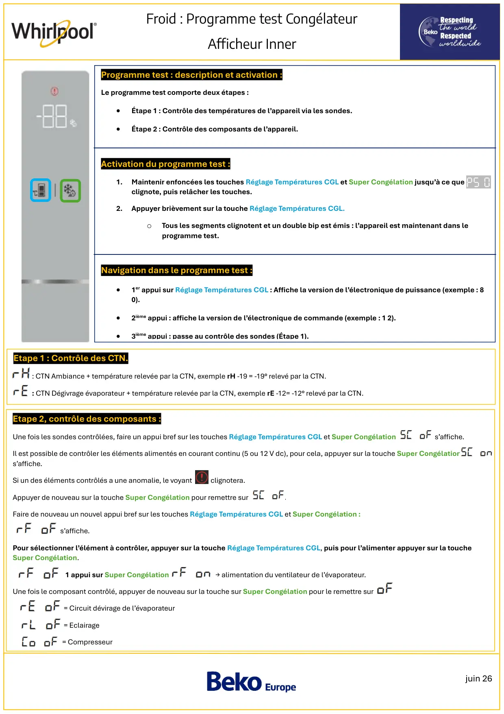
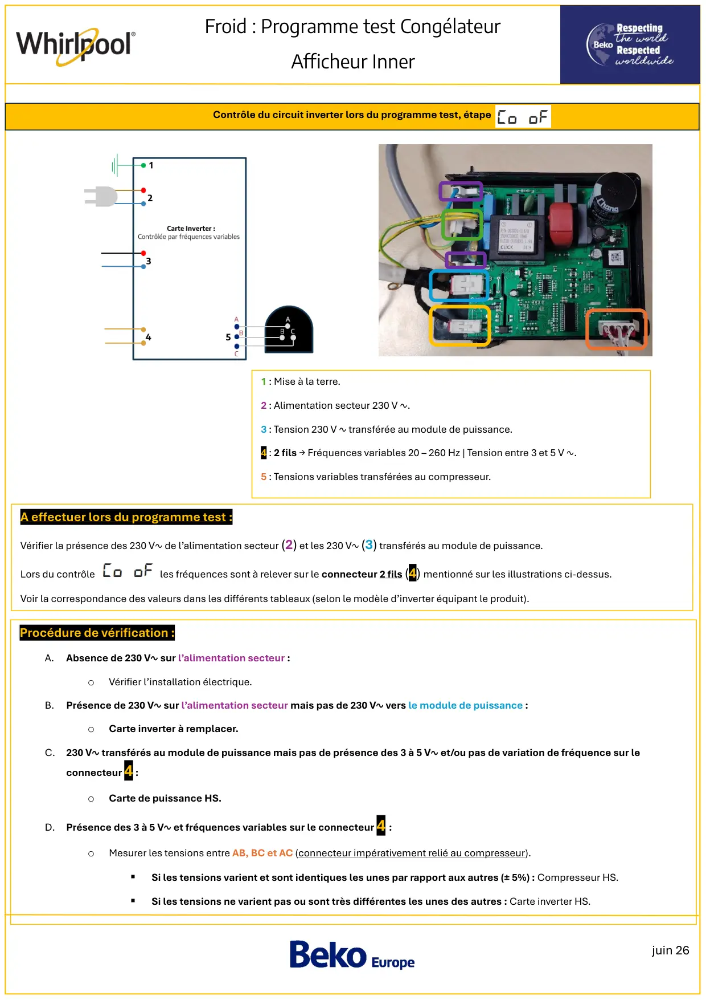
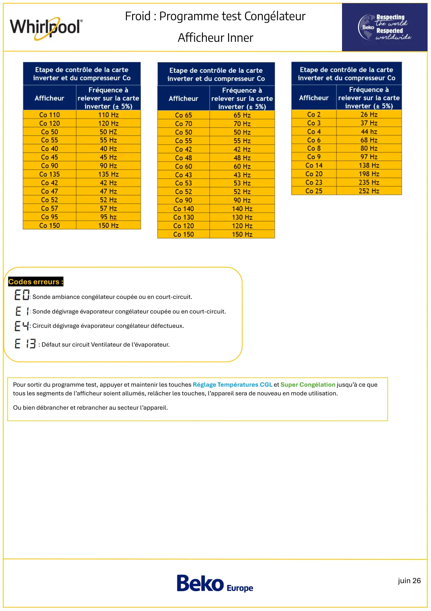

Prog Test Foid Whirlpool CGL Afficheur Inner

juin 26Froid : Programme test CongélateurAfficheur InnerEtape 2, contrôle des composants :Une fois les sondes contrôlées, faire un appui bref sur les touches Réglage Températures CGL et Super Congélation s’affiche.Il est possible de contrôler les éléments alimentés en courant continu (5 ou 12 V dc), pour cela, appuyer sur la touche Super Congélations’affiche.Si un des éléments contrôlés a une anomalie, le voyant clignotera.Appuyer de nouveau sur la touche Super Congélation pour remettre sur .Faire de nouveau un nouvel appui bref sur les touches Réglage Températures CGL et Super Congélation :s’affiche.Pour sélectionner l’élément à contrôler, appuyer sur la touche Réglage Températures CGL, puis pour l’alimenter appuyer sur la toucheSuper Congélation.1 appui sur Super Congélation → alimentation du ventilateur de l’évaporateur.Une fois le composant contrôlé, appuyer de nouveau sur la touche sur Super Congélation pour le remettre sur= Circuit dévirage de l’évaporateur= Eclairage= CompresseurProgramme test : description et activation :Le programme test comporte deux étapes :•Étape 1 : Contrôle des températures de l’appareil via les sondes.•Étape 2 : Contrôle des composants de l’appareil.Activation du programme test :1.Maintenir enfoncées les touches Réglage Températures CGL et Super Congélation jusqu’à ce queclignote, puis relâcher les touches.2.Appuyer brièvement sur la touche Réglage Températures CGL.oTous les segments clignotent et un double bip est émis : l’appareil est maintenant dans leprogramme test.Navigation dans le programme test :•1er appui sur Réglage Températures CGL : Affiche la version de l’électronique de puissance (exemple : 80).•2ième appui : affiche la version de l’électronique de commande (exemple : 1 2).•3ième appui : passe au contrôle des sondes (Étape 1).Etape 1 : Contrôle des CTN.: CTN Ambiance + température relevée par la CTN, exemple rH -19 = -19° relevé par la CTN.: CTN Dégivrage évaporateur + température relevée par la CTN, exemple rE -12= -12° relevé par la CTN.
1 / 3
juin 26Froid : Programme test CongélateurAfficheur InnerContrôle du circuit inverter lors du programme test, étape1 : Mise à la terre.2 : Alimentation secteur 230 V ∿.3 : Tension 230 V ∿ transférée au module de puissance.4 : 2 fils → Fréquences variables 20 – 260 Hz | Tension entre 3 et 5 V ∿.5 : Tensions variables transférées au compresseur.A effectuer lors du programme test :Vérifier la présence des 230 V∿ de l’alimentation secteur (2) et les 230 V∿ (3) transférés au module de puissance.Lors du contrôle les fréquences sont à relever sur le connecteur 2 fils (4) mentionné sur les illustrations ci-dessus.Voir la correspondance des valeurs dans les différents tableaux (selon le modèle d’inverter équipant le produit).Procédure de vérification :A.Absence de 230 V∿ sur l’alimentation secteur :oVérifier l’installation électrique.B.Présence de 230 V∿ sur l’alimentation secteur mais pas de 230 V∿ vers le module de puissance :oCarte inverter à remplacer.C. 230 V∿ transférés au module de puissance mais pas de présence des 3 à 5 V∿ et/ou pas de variation de fréquence sur leconnecteur 4 :oCarte de puissance HS.D. Présence des 3 à 5 V∿ et fréquences variables sur le connecteur 4 :oMesurer les tensions entre AB, BC et AC (connecteur impérativement relié au compresseur).▪Si les tensions varient et sont identiques les unes par rapport aux autres (± 5%) : Compresseur HS.▪Si les tensions ne varient pas ou sont très différentes les unes des autres : Carte inverter HS.
2 / 3
juin 26Froid : Programme test CongélateurAfficheur InnerCodes erreurs :: Sonde ambiance congélateur coupée ou en court-circuit.: Sonde dégivrage évaporateur congélateur coupée ou en court-circuit.: Circuit dégivrage évaporateur congélateur défectueux.: Défaut sur circuit Ventilateur de l’évaporateur.Pour sortir du programme test, appuyer et maintenir les touches Réglage Températures CGL et Super Congélation jusqu’à ce quetous les segments de l’afficheur soient allumés, relâcher les touches, l’appareil sera de nouveau en mode utilisation.Ou bien débrancher et rebrancher au secteur l’appareil.
3 / 3